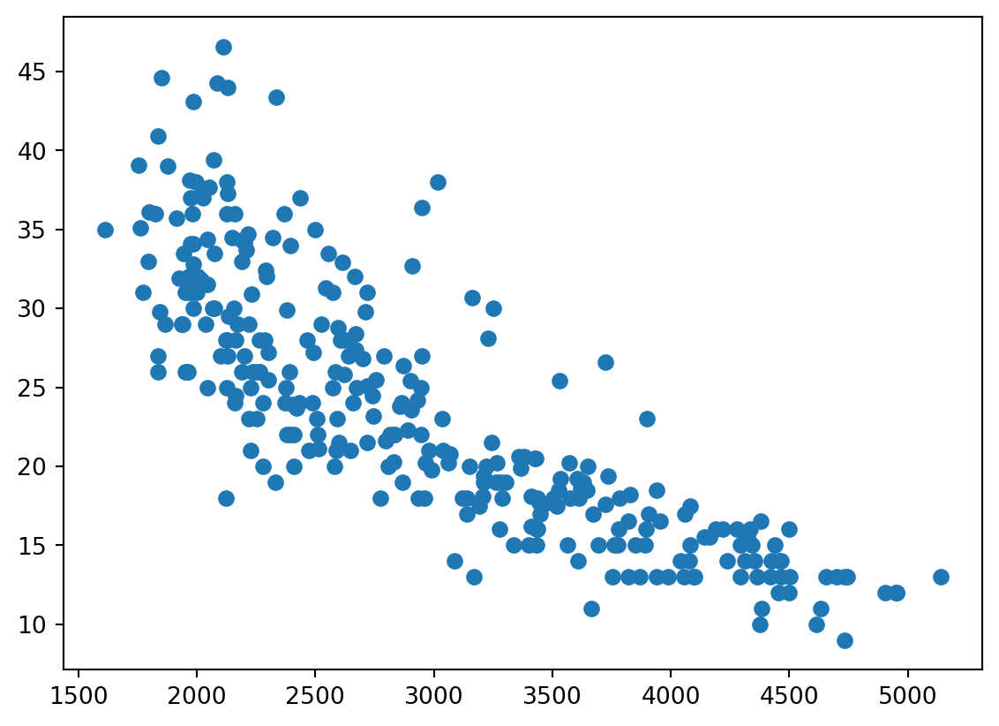

Plot = import("https://esm.sh/@observablehq/plot")
d3 = require("d3@7")
topojson = require("topojson")
MathJax = require("https://cdnjs.cloudflare.com/ajax/libs/mathjax/3.2.2/es5/tex-svg.min.js").catch(() => window.MathJax)
tf = require("https://cdn.jsdelivr.net/npm/@tensorflow/tfjs@latest/dist/tf.min.js").catch(() => window.tf)
THREE = {
const THREE = window.THREE = await require("three@0.130.0/build/three.min.js");
await require("three@0.130.0/examples/js/controls/OrbitControls.js").catch(() => {});
await require("three@0.130.0/examples/js/loaders/SVGLoader.js").catch(() => {});
return THREE;
}
function sample(f, start, end, nsamples=100) {
let arr = [...Array(nsamples).keys()]
let dist = end - start
function arrmap(ind) {
const x = (ind * dist) / nsamples + start;
return [x, f(x)];
}
return arr.map(arrmap)
}
function sigmoid(x){
return 1 / (1 + Math.exp(-x));
}
function sum(x) {
let s = 0;
for (let i = 0; i < x.length; i++ ) {
s += x[i];
}
return s;
}
function mean(x) {
let s = 0;
for (let i = 0; i < x.length; i++ ) {
s += x[i];
}
return s / x.length;
}
function cross_ent(x, y) {
return y ? -Math.log(sigmoid(x)) : -Math.log(sigmoid(-x));
}
function se(x, y) {
return (x - y) * (x - y);
}
function shuffle(array) {
let currentIndex = array.length, randomIndex;
// While there remain elements to shuffle.
while (currentIndex > 0) {
// Pick a remaining element.
randomIndex = Math.floor(Math.random() * currentIndex);
currentIndex--;
// And swap it with the current element.
[array[currentIndex], array[randomIndex]] = [
array[randomIndex], array[currentIndex]];
}
return array;
}
function acc(x, y) {
return Number(y == (x > 0));
}
function grid_func(f, width, height, x1, y1, x2, y2) {
let values = new Array(width * height);
const xstride = (x2 - x1) / width;
const ystride = (y2 - y1) / height;
let y = 0;
let x = 0;
let ind = 0;
for (let i = 0; i < height; i++ ) {
for (let j = 0; j < width; j++, ind++) {
x = x1 + j * xstride;
y = y1 + i * ystride;
values[ind] = f(x, y);
}
}
return {width: width, height: height, x1: x1, y1: y1, x2: x2, y2: y2, values: values};
}
function get_accessors(keys, byindex=false) {
let isString = value => typeof value === 'string';
let index = 0;
let indexmap = {};
let accessors = [];
for (let i = 0; i < keys.length; i++){
let k = keys[i];
if (Array.isArray(k)) {
let access = isString(k[0]) ? (x => x[k[0]]) : k[0];
if (byindex) {
if (isString(k[0]) && !(k[0] in indexmap)) {
indexmap[k[0]] = index;
index++;
}
let accessindex = indexmap[k[0]];
access = x => x[accessindex];
let process = k[1];
let final_access = x => process(access(x));
accessors.push(final_access);
}
else {
let process = k[1];
let final_access = x => process(access(x));
accessors.push(final_access);
}
}
else {
let access = isString(k) ? (x => x[k]) : k;
if (byindex) {
if (isString(k) && !(k in indexmap)) {
indexmap[k] = index;
index++;
}
let accessindex = indexmap[k];
access = x => x[accessindex];
}
accessors.push(access);
}
}
return accessors;
}
function predict(obs, weights, keys=["0", "1", "2", "3"], byindex=false) {
let isString = value => typeof value === 'string';
let accessors = get_accessors(keys, byindex);
let output = weights[0];
let wi = 1;
for (let i = 0; (i < keys.length) && (wi < weights.length); i++, wi++){
output += weights[wi] * accessors[i](obs);
}
return output;
}
function mean_loss(f, data, weights, keys, label, l2=0) {
let reg = 0;
if (l2 > 0){
for (let i = 1; i < weights.length; i++) {
reg += weights[i] * weights[i];
}
}
const isString = value => typeof value === 'string';
const get_label = isString(label) ? (x => x[label]) : label;
return mean(data.map(x => f(predict(x, weights, keys), get_label(x)))) + l2 * reg;
}
function get_domains(data, accessors, margin=0.1) {
let domains = [];
for (let i = 0; i < accessors.length; i++){
let xdomain = d3.extent(data, accessors[i]);
let xdsize = (xdomain[1] - xdomain[0]);
let xmin = xdomain[0] - xdsize * margin;
let xmax = xdomain[1] + xdsize * margin;
domains.push([xmin, xmax]);
}
return domains;
}
function logisticPlot2d(data, weights, keys, label, interval=0.05) {
const accuracy = mean_loss(acc, data, weights, keys, label);
let isString = value => typeof value === 'string';
let accessors = get_accessors(keys);
let index_accessors = get_accessors(keys, true);
let domains = get_domains(data, accessors);
const get_label = isString(label) ? (x => x[label]) : label;
return Plot.plot({
x: {tickSpacing: 80, label: "x"},
y: {tickSpacing: 80, label: "y"},
title: "Accuracy: " + accuracy.toFixed(3),
color: {type: "linear", legend: true, scheme: "BuRd", domain: [-0.5, 1.5]},
marks: [
Plot.contour({
fill: (x, y) => sigmoid(predict([x, y], weights, index_accessors)),
x1: domains[0][0], y1: domains[1][0], x2: domains[0][1], y2: domains[1][1], interval: interval,
}),
Plot.dot(data, {x: accessors[0], y: accessors[1], stroke: x=> (get_label(x) ? 1.35 : -0.35)})
]
});
}
function logisticLossPlot2d(data, weights, keys, label) {
const loss = mean_loss(cross_ent, data, weights, keys, label);
let isString = value => typeof value === 'string';
let accessors = get_accessors(keys);
let index_accessors = get_accessors(keys, true);
let domains = get_domains(data, accessors);
const get_label = isString(label) ? (x => x[label]) : label;
return Plot.plot({
x: {tickSpacing: 80, label: "x"},
y: {tickSpacing: 80, label: "y"},
title: "Loss: " + loss.toFixed(3),
color: {type: "linear", legend: true, scheme: "BuRd", domain: [0, 5]},
marks: [
Plot.contour({
value: (x, y) => predict([x, y], weights, index_accessors),
fillOpacity: 0.2,
stroke: "black", x1: domains[0][0], y1: domains[1][0], x2: domains[0][1], y2: domains[1][1],
thresholds: [-1e6, 0, 0.00001]
}),
Plot.dot(data, {x: accessors[0], y: accessors[1], stroke: x=> cross_ent(predict(x, weights, keys), get_label(x)),
strokeOpacity: 0.5 })
]
});
}
function lossPlot2d(f, data, keys, label, l2=0, res=100, x1=-40, y1=-0.015, x2=40, y2=0.015, vmax=50, nlines=25, ctype="sqrt", scale=(x => x)) {
let grid = 0;
function lossFunc(w, b) {
return scale(mean_loss(f, data, [w, b], keys, label, l2));
}
grid = grid_func(lossFunc,
res, res, x1, y1, x2, y2
);
function plot2d(weights) {
let w = weights;
if (!(Array.isArray(w[0]))){
w = [w];
}
var arrows = w.slice(0, w.length - 1).map(function(e, i) {
return e.concat(w[i+1]);
});
let interval= vmax / nlines;
let thresholds = [];
for (let i = 0; i < nlines; i++) {
thresholds.push(i * interval);
}
let loss = mean_loss(f, data, w[w.length - 1], keys, label, l2)
return Plot.plot({
title: "Loss: " + loss.toFixed(3),
color: {type: "linear", legend: true, label: "Loss", scheme: "BuRd", domain: [0, vmax], type: ctype},
marks: [
Plot.contour(grid.values, {width: grid.width, height: grid.height, x1: grid.x1, x2:grid.x2, y1: grid.y1, y2: grid.y2,
stroke: Plot.identity, thresholds: thresholds}),
Plot.dot(w),
Plot.arrow(arrows, {x1: "0", y1: "1", x2: "2", y2: "3", stroke: "black"})
]
})
}
return plot2d;
}
function regressionPlot(data, weights, keys, label, l2, f=se, stroke="") {
let loss = mean_loss(f, data, weights, keys, label, l2);
let isString = value => typeof value === 'string';
let accessors = get_accessors(keys);
let index_accessors = get_accessors(keys, true);
let domains = get_domains(data, get_accessors([label].concat(keys)));
const get_label = isString(label) ? (x => x[label]) : label;
let stroke_shade = stroke;
if (stroke == "") {
stroke_shade = (x => f(predict(x, weights, keys), get_label(x)))
}
return Plot.plot({
y: {domain: domains[0]},
title: "Loss: " + loss.toFixed(3),
color: {type: "linear", legend: true, label: "Loss", scheme: "BuRd", domain: [0, 100]},
marks: [
Plot.line(sample((x) => predict([x], weights, index_accessors), domains[1][0], domains[1][1]), {stroke: 'black'}),
Plot.dot(data, {x: accessors[0], y: get_label, stroke: stroke_shade })
]
})
}Lecture 5: Introduction to Neural Networks
Manim Community v0.17.3
The story so far
Data
\[ \text{Honda Accord: } \begin{bmatrix} \text{Weight:} & \text{2500 lbs} \\ \text{Horsepower:} & \text{ 123 HP} \\ \text{Displacement:} & \text{ 2.4 L} \\ \text{0-60mph:} & \text{ 7.8 Sec} \end{bmatrix} \longrightarrow \text{ MPG: ?} \]
\[ \text{Dodge Aspen: } \begin{bmatrix} \text{Weight:} & \text{3800 lbs} \\ \text{Horsepower:} & \text{ 155 HP} \\ \text{Displacement:} & \text{ 3.2 L} \\ \text{0-60mph:} & \text{ 6.8 Sec} \end{bmatrix} \longrightarrow \text{ MPG: ?} \]
\[ \vdots \quad \vdots \]
\[ \mathcal{D} = \{ (\mathbf{x}_1, y_1),\ (\mathbf{x}_2, y_2),\ ...\ (\mathbf{x}_N, y_N)\} = \big(\mathbf{X}, \mathbf{y}\big) \]
Inputs
| weight | horsepower | displacement | acceleration | |
|---|---|---|---|---|
| car name | ||||
| chevrolet chevelle malibu | 3504 | 130.0 | 307.0 | 12.0 |
| buick skylark 320 | 3693 | 165.0 | 350.0 | 11.5 |
| plymouth satellite | 3436 | 150.0 | 318.0 | 11.0 |
| amc rebel sst | 3433 | 150.0 | 304.0 | 12.0 |
| ford torino | 3449 | 140.0 | 302.0 | 10.5 |
| ... | ... | ... | ... | ... |
| ford mustang gl | 2790 | 86.0 | 140.0 | 15.6 |
| vw pickup | 2130 | 52.0 | 97.0 | 24.6 |
| dodge rampage | 2295 | 84.0 | 135.0 | 11.6 |
| ford ranger | 2625 | 79.0 | 120.0 | 18.6 |
| chevy s-10 | 2720 | 82.0 | 119.0 | 19.4 |
305 rows × 4 columns
\[ \mathbf{X} = \begin{bmatrix} X_{11} & X_{12} & X_{13} & X_{14} \\ X_{21} & X_{22} & X_{23} & X_{24} \\ X_{31} & X_{32} & X_{33} & X_{34} \\ \vdots & \vdots & \vdots & \vdots \\ X_{N1} & X_{N2} & X_{N3} & X_{N4} \\ \end{bmatrix} \underset{\text{Car data}}{\longrightarrow} \begin{bmatrix} 3504 & 130 & 307.0 & 12.0 \\ 3693 & 165 & 350.0 & 11.5 \\ 3493 & 150 & 318.0 & 11.0 \\ \vdots & \vdots & \vdots & \vdots \\ 2720 & 82 & 119.0 & 19.4 \\ \end{bmatrix}\]
\[\mathbf{X}:\ N \times d \ \text{matrix} , \quad (\mathbf{X} \in \mathbb{R}^{N\times d})\] \[ N: \text{number of observations}, \quad d: \text{number of features}\]
print(X)[[3504. 130. 307. 12. ]
[3693. 165. 350. 11.5]
[3436. 150. 318. 11. ]
...
[2295. 84. 135. 11.6]
[2625. 79. 120. 18.6]
[2720. 82. 119. 19.4]]Outputs
| mpg | |
|---|---|
| car name | |
| chevrolet chevelle malibu | 18.0 |
| buick skylark 320 | 15.0 |
| plymouth satellite | 18.0 |
| amc rebel sst | 16.0 |
| ford torino | 17.0 |
| ... | ... |
| ford mustang gl | 27.0 |
| vw pickup | 44.0 |
| dodge rampage | 32.0 |
| ford ranger | 28.0 |
| chevy s-10 | 31.0 |
305 rows × 1 columns
\[ \mathbf{y} = \begin{bmatrix} y_{1} \\ y_{2} \\ y_{3} \\ \vdots \\ y_{N} \\ \end{bmatrix} \underset{\text{Car data}}{\longrightarrow} \begin{bmatrix} 18.0 \\ 15.0 \\ 16.0 \\ \vdots \\ 31.0 \\ \end{bmatrix}\]
\[\mathbf{y}:\ N \ \text{vector}, \quad (\mathbf{y} \in \mathbb{R}^N)\] \[ N: \text{number of observations}\]
print(y)[18. 15. 18. ... 32. 28. 31.]Inputs
| weight | horsepower | displacement | acceleration | |
|---|---|---|---|---|
| car name | ||||
| chevrolet chevelle malibu | 3504 | 130.000000 | 307.000000 | 12.000000 |
| buick skylark 320 | 3693 | 165.000000 | 350.000000 | 11.500000 |
| plymouth satellite | 3436 | 150.000000 | 318.000000 | 11.000000 |
| amc rebel sst | 3433 | 150.000000 | 304.000000 | 12.000000 |
| ford torino | 3449 | 140.000000 | 302.000000 | 10.500000 |
\[\mathbf{x}_3 = \begin{bmatrix} 3433 \\ 150 \\ 304 \\ 12 \end{bmatrix}, \quad (d \text{ vector})\]
print(X[3])[3433. 150. 304. 12.]As a column vector
\[\mathbf{x}_3 = \begin{bmatrix} 3433 \\ 150 \\ 304 \\ 12 \end{bmatrix}, \quad (d \text{ vector})\quad \underset{\text{same notation!}}{\longleftrightarrow} \quad \mathbf{x}_3 = \begin{bmatrix} 3433 \\ 150 \\ 304 \\ 12 \end{bmatrix}, \quad (d \times 1 \text{ matrix}) \]
print(X[3].reshape((-1, 1)))[[3433.]
[ 150.]
[ 304.]
[ 12.]]As a row vector
\[\mathbf{x}_3^T = \begin{bmatrix} 3433 & 150 & 304 & 12 \end{bmatrix}, \quad (d \times 1 \text{ matrix}) \]
print(X[3].reshape((1, -1)))[[3433. 150. 304. 12.]]\[\mathbf{X} = \begin{bmatrix} \mathbf{x}_1^T \\ \mathbf{x}_2^T \\ \vdots \\ \mathbf{x}_N^ T \end{bmatrix}\]
Outputs
| mpg | |
|---|---|
| car name | |
| chevrolet chevelle malibu | 18.000000 |
| buick skylark 320 | 15.000000 |
| plymouth satellite | 18.000000 |
| amc rebel sst | 16.000000 |
| ford torino | 17.000000 |
\[y_3 = 16, \quad (\text{scalar})\]
print(y[3])16.0Inputs
| weight | horsepower | displacement | acceleration | |
|---|---|---|---|---|
| car name | ||||
| chevrolet chevelle malibu | 3504 | 130.000000 | 307.000000 | 12.000000 |
| buick skylark 320 | 3693 | 165.000000 | 350.000000 | 11.500000 |
| plymouth satellite | 3436 | 150.000000 | 318.000000 | 11.000000 |
| amc rebel sst | 3433 | 150.000000 | 304.000000 | 12.000000 |
| ford torino | 3449 | 140.000000 | 302.000000 | 10.500000 |
weight = X[:, 0]
print(weight[:5])[3504. 3693. 3436. 3433. 3449.]Outputs
| mpg | |
|---|---|
| car name | |
| chevrolet chevelle malibu | 18.000000 |
| buick skylark 320 | 15.000000 |
| plymouth satellite | 18.000000 |
| amc rebel sst | 16.000000 |
| ford torino | 17.000000 |
print(y[:5])[[18.]
[15.]
[18.]
[16.]
[17.]]f = plt.scatter(weight, y)
Linear predictions
Find simple function that predicts output \[f(\mathbf{X}) = \mathbf{x}^T \mathbf{w}\] \[\mathbf{x}: \text{input} (d \text{ vector}), \quad\mathbf{w}: \text{weights or parameters} (d \text{ vector})\]
| weight | horsepower | displacement | acceleration | |
|---|---|---|---|---|
| car name | ||||
| chevrolet chevelle malibu | 3504 | 130.000000 | 307.000000 | 12.000000 |
| buick skylark 320 | 3693 | 165.000000 | 350.000000 | 11.500000 |
| plymouth satellite | 3436 | 150.000000 | 318.000000 | 11.000000 |
| amc rebel sst | 3433 | 150.000000 | 304.000000 | 12.000000 |
| ford torino | 3449 | 140.000000 | 302.000000 | 10.500000 |
\[f(\mathbf{x}_4) = \mathbf{x}_4^T \mathbf{w} = \begin{bmatrix} 3433 \\ 150 \\ 304 \\ 12 \end{bmatrix}^T \begin{bmatrix} w_1 \\ w_2 \\ w_3 \\ w_4 \end{bmatrix} = 3433 w_1 + 150 w_2 + 304 w_3 + 12w_4 \]
w = np.array([0.02, 0.2, -0.1, -1.5])
def f(x, w):
# Transpose not needed because x and w are 1-dimensional vectors
# (Not column/row vectors!)
return np.dot(x, w)
print(f(X[3], w))50.25999999999999# Make everything explicit column vectors
w = w.reshape((-1, 1))
x3 = X[3].reshape((-1, 1))
# Works!
def f(x, w):
return np.dot(x.T, w)
f(X[3], w)array([50.26])Find simple function that predicts output \[f(\mathbf{X}) = \mathbf{X} \mathbf{w}\] \[\mathbf{x}: \text{all inputs} (N\times d \text{ matrix}), \quad\mathbf{w}: \text{weights or parameters} (d \text{ vector})\]
| weight | horsepower | displacement | acceleration | |
|---|---|---|---|---|
| car name | ||||
| chevrolet chevelle malibu | 3504 | 130.000000 | 307.000000 | 12.000000 |
| buick skylark 320 | 3693 | 165.000000 | 350.000000 | 11.500000 |
| plymouth satellite | 3436 | 150.000000 | 318.000000 | 11.000000 |
| amc rebel sst | 3433 | 150.000000 | 304.000000 | 12.000000 |
| ford torino | 3449 | 140.000000 | 302.000000 | 10.500000 |
\[f(\mathbf{X}) = \mathbf{X} \mathbf{w} = \begin{bmatrix} 3504 & 130 & 307 & 12 \\ 3693 & 165 & 350 & 11.5 \\ 3436 & 150 & 318 & 11 \\ 3433 & 150 & 304 & 12 \\ \vdots & \vdots & \vdots & \vdots \\ \end{bmatrix} \begin{bmatrix} w_1 \\ w_2 \\ w_3 \\ w_4 \end{bmatrix} \]
w = np.array([0.02, 0.2, -0.1, -1.5])
def f(x, w):
return np.dot(x, w)
print(f(X, w) [:4])[47.38 54.61 50.42 50.26]Find x
Neural networks
Feature transforms revisited
In the last lecture we saw that we can define more complex and expressive functions by transforming the inputs in various ways. For example, we can define a function as:
\[ f(\mathbf{x})=\phi(\mathbf{x})^T \mathbf{w} = w_4 e^{x_1} + w_3 \sin(x_1) + w_2x_1^2 + w_1 x_1 + b ,\quad \phi(\mathbf{x}) = \begin{bmatrix} x_1 \\ x_1^2 \\ \sin(x_1) \\ e^{x_1} \\ 1 \end{bmatrix} \]
sin_X = np.sin(X) # sin(x)
squared_X = X ** 2 # x^2
exp_X = np.exp(X) # e^x
ones = np.ones((X.shape[0], 1)) # Column of 1s
transformedX = np.concatenate([X, squared_X, sin_X, exp_X, ones], axis=1)We see that by varying the weights \(w_1...w_4\), we can get a variety of complex, non-linear functions of our input \(\mathbf{x}\)!
This approach raises a big question though: how do we actually choose what transforms of our inputs to use?
Learned feature transforms
We’ve already seen that we can learn a function by defining our function in terms of a set of parameters \(\mathbf{w}\): \[f(\mathbf{x}) = \mathbf{x}^T\mathbf{w}\] and then minimizing a loss as a function of \(\mathbf{w}\) \[\mathbf{w}^* = \underset{\mathbf{w}}{\text{argmin}}\ \mathbf{Loss}(\mathbf{w})\] Which we can do with gradient descent: \[\mathbf{w}^{(k+1)} \longleftarrow \mathbf{w}^{(k)} - \alpha \nabla_{\mathbf{w}} \mathbf{Loss}(\mathbf{w})\]
So we didn’t choose \(\mathbf{w}\) explicitly, we let our algorithm find the optimal values. Ideally, we could do the same thing for our feature transforms: let our algorithm choose the optimal functions to use. This raises the question:
Can we learn the functions in our feature transform? The answer is yes! To see how, let’s start by writing out what this would look like. We’ll start with the feature transform framework we’ve already introduced, but now let’s replace the individual transforms with functions that we can learn.
\[ f(\mathbf{x})=\phi(\mathbf{x})^T \mathbf{w} ,\quad \phi(\mathbf{x}) = \begin{bmatrix} g_1(x_1) \\ g_2(x_1) \\ g_3(x_1) \\ g_4(x_1) \\ 1 \end{bmatrix} \]
The key insight we’ll use here is that we’ve already seen how to learn functions: this is exactly what our regression models are doing! So if we want to learn a feature transform, we can try using one of these functions that we know how to learn this case: logistic regression. \[g_i(\mathbf{x}) = \sigma(\mathbf{x}^T \mathbf{w}_i)\] With this form we get a new feature transform: \[ f(\mathbf{x})=\phi(\mathbf{x})^T \mathbf{w}_0,\quad \phi(\mathbf{x}) = \begin{bmatrix} \sigma(\mathbf{x}^T \mathbf{w}_1) \\ \sigma(\mathbf{x}^T \mathbf{w}_2) \\ \sigma(\mathbf{x}^T \mathbf{w}_3) \\ \sigma(\mathbf{x}^T \mathbf{w}_4) \\ 1 \end{bmatrix} \]
Here we’ll call our original weight vector \(\mathbf{w}_0\) to distinguish it from the others. If we choose different weights for these different transform functions, we can have different feature transforms!
Let’s look at a very simple example: \[\mathbf{x} = \begin{bmatrix} x_1\\ 1 \end{bmatrix}, \quad \mathbf{w}_0 = \begin{bmatrix} w_{01} \\ b_0 \end{bmatrix}\] \[ f(\mathbf{x})=\phi(\mathbf{x})^T \mathbf{w}_0,\quad \phi(\mathbf{x}) = \begin{bmatrix} \sigma(\mathbf{x}^T \mathbf{w}_1) \\ \sigma(\mathbf{x}^T \mathbf{w}_2) \\ 1 \end{bmatrix} = \begin{bmatrix} \sigma(x_1 w_{11} + b_1) \\ \sigma(x_1 w_{21} + b_2) \\ 1 \end{bmatrix} \] In this case, we can write out our prediction function explicitly as: \[f(\mathbf{x}) = w_{01} \cdot\sigma(x_1 w_{11} + b_1) + w_{02}\cdot \sigma(x_1 w_{21} + b_2) + b_0 \]
Let’s see what happens if define our function this way and vary the parameters \(\mathbf{w}_0,\ \mathbf{w}_1,\ \mathbf{w}_2\).
If we let \[\mathbf{W}_1 = \begin{bmatrix} \mathbf{w}_1^T \\ \mathbf{w}_2^T \\mathbf{w}_3^T \\ \vdots \end{bmatrix}\] We can write this more compactly as: \[f(\mathbf{x})= \sigma(\mathbf{x}^T \mathbf{W}_1^T)^T \mathbf{w_0} \] Or for a whole dataset: \[\mathbf{X} = \begin{bmatrix} \mathbf{x}_1^T \\ \mathbf{x}_2^T \mathbf{x}_3^T \\ \vdots \end{bmatrix}\] \[f(\mathbf{X})= \sigma(\mathbf{X} \mathbf{W}_1^T)^T \mathbf{w_0} \]
Neural networks
What we’ve just seen is a neural network!
Terminology-wise we call a single feature transform like \(\sigma(x_1 w_{11} + b_1)\) a neuron.
We call the whole set of transformed features the hidden layer: \[\begin{bmatrix} \sigma(\mathbf{x}^T \mathbf{w}_1) \\ \sigma(\mathbf{x}^T \mathbf{w}_2) \\ \sigma(\mathbf{x}^T \mathbf{w}_3) \\ \sigma(\mathbf{x}^T \mathbf{w}_4) \\ 1 \end{bmatrix} \]
We call \(\mathbf{X}\) the input and \(f(\mathbf{X})\) the output.
We often describe neural networks using a node-link diagram:

Linear transforms
Can we use linear regression as a feature transform?
Let’s see what happens in our simple example: \[\mathbf{x} = \begin{bmatrix} x_1\\ 1 \end{bmatrix}, \quad \mathbf{w}_0 = \begin{bmatrix} w_{01} \\ b_0 \end{bmatrix}\] \[ f(\mathbf{x})=\phi(\mathbf{x})^T \mathbf{w}_0,\quad \phi(\mathbf{x}) = \begin{bmatrix} \mathbf{x}^T \mathbf{w}_1 \\ \mathbf{x}^T \mathbf{w}_2 \\ 1 \end{bmatrix} = \begin{bmatrix} x_1 w_{11} + b_1 \\ x_1 w_{21} + b_2 \\ 1 \end{bmatrix} \] In this case, we can write out our prediction function explicitly as: \[f(\mathbf{x}) = w_{01} \cdot x_1 w_{11} + b_1 + w_{02}\cdot x_1 w_{21} + b_2 + b_0 \] \[= (w_{11}w_{01}) x_1 + (w_{21}w_{02}) x_1 + (b_0 + b_1 + b2)\] We see that we ultimately just end up with another linear function of \(\mathbf{x}\) and we’re no better off than in our orginal case.
In general: \[ f(\mathbf{x})=\phi(\mathbf{x})^T \mathbf{w}_0,\quad \phi(\mathbf{x}) = \begin{bmatrix} \mathbf{x}^T \mathbf{w}_1 \\ \mathbf{x}^T \mathbf{w}_2\\ \mathbf{x}^T \mathbf{w}_3 \\ \mathbf{x}^T \mathbf{w}_4\\ 1 \end{bmatrix} \]
\[ f(\mathbf{x})= w_{01} (\mathbf{x}^T \mathbf{w}_1) + w_{02} (\mathbf{x}^T \mathbf{w}_2) +... \] \[= \mathbf{x}^T ( w_{01}\mathbf{w}_1) + \mathbf{x}^T (w_{02} \mathbf{w}_2) +... \] Which is again just a linear function. The motivates the need for using a non-linear function like \(\sigma(\cdot)\) in our neurons. We’ll see more about this next week!